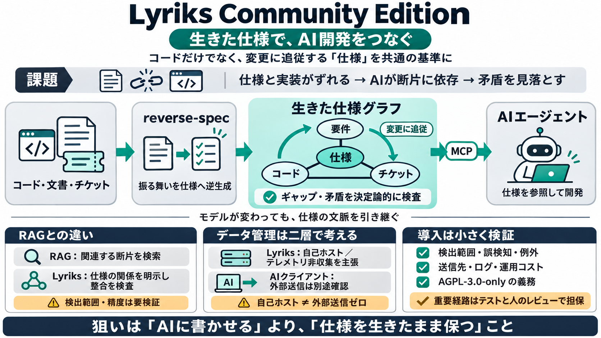

AGPL-3.0 Explained: The Network Clause, SaaS Risk and How It Differs from GPLv3
Treat any AGPL-licensed component the moment it's flagged as requiring a real legal review before it ships to production…

生きた仕様 × AI連携
仕様が読まれない
地図ではなく
RAGより強い検査
AIに文脈を渡す
自己ホストが前提
期待できる効果
何が“spec”になる？
セキュリティは二層
導入前のチェック
Treat any AGPL-licensed component the moment it's flagged as requiring a real legal review before it ships to production…
You should also get your employer (if you work as a programmer) or school, if any, to sign a "copyright disclaimer" for …
## MCP Implementation Guide: Architecture and Components This MCP implementation guide for enterprise covers the client…
The 2026-07-28 specification is the most significant revision to the Model Context Protocol since its November 2024 laun…
## Notes This version was released: 19 November 2007. This license identifier refers to the choice to use code under AG…